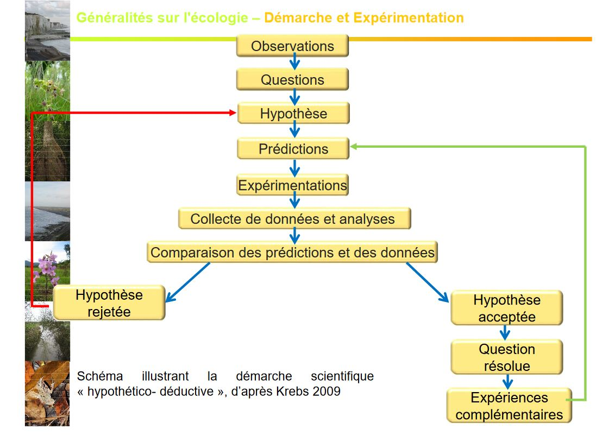

Ecologie, les organismes et leur milieu
Introduction générale
I) Un peu d'histoire
Discipline ancienne, remontant aux premiers hommes ayant développé la chasse, la pêche, collecte : besoin de connaissance sur quand et où trouver leurs ressources. Vers le dvp de la sédentarisation et des pratiques agricoles : besoin de comprendre le dvp des plantes et le comportement des animaux. Traces d'écrits datant des Egyptiens, Babyloniens concernant les récoltes (centre de passage de commerces très importants)
Ecrits du 4e siècle par Aristote traitant des fléaux de mulots et de criquets.
A partir du 17e siècle, beaucoup d'étude sont entreprises sur les pop humaines (dynamique des pop) et en histoire naturelle (diversité du vivant)
La pomme de terre a été une très grosse ressource de même pour les tomates, maïs, riz. Elles vont être apportées au fur et à mesure des découvertes. L'homme a aidé les espèces à se développer, ce qui a pu provoquer des espèces invasives créant la disparition d'espèces.
GRAUNT en 1662 décrit les changements quantitatifs de la pop humaine de Londres et estime qu'elle peut doubler en 64 ans.
MATHUS (énonomiste) en 1798 décrit son inquiétude face à la démographie humaine galopante dans son ouvrage Essay on Population
- loi mathus ( mettant en relation la démographie et la ressource alimentaire) (voir le seuil de pop pour une ressource donnée)
- interêt des maths dans la compréhension des règles de la démographie : ex courbe logistique de Verhuist 1838
Carl VON LINNE: Nombreuses expéditions en Europe 1735 : publication de Systenna naturae qui présente sa classification de la nature 1753 : publication de Species plantarium description des espèces végétale, utilisation de la nomenclature bionimale
BUFFON 1756 : écrit l'ouvrage Histoire naturelle qui est l'une des plus importantes entreprises de publication scientifique du Siècle des Lumières
1805: ALEXANDER VON HUMBOLDT géographe et naturaliste travaille sur la géographie des plantes Nombreuses expéditions pour les Amériques * étape de la végétation : met en relation végétation - climat
G. SAINT HILAIRE dvp le sciences du comportement (Ethologie)
ERNST HECKEL propose en 1866 le terme ECOLOGIE*
FLAHAUT propose le concept d'association végétale*
1913 fondation de la British Ecological Society
1916 : fondation de la Ecological Society Américaine
1992 : Nations Unies - Sommet de la Terre à Rio de Janeiro * préservation de la diversité biologique
1976 Ecologie devient une science officielle en France (section ecologie au CNRS)
1997 : signature du protocole de Kyoto * diminution de 6 gaz : CO2, le méthane, No, HFCs, PFCs
II) Place de l'écologie
L'écologie à besoin de biologie, science comportementale (ex type de musique), l'évolution, la génétique (ex :retrouver les ancêtres communs) et la physiologie. (schéma de KREBS 2009)
- étudier le fonctionnement et l'évolution de chaque système ou niveau d'organisation
- mettre en évidence les relations:
- entre organismes vivants et leur milieu
- entre organismes vivants
- interpréter les structures de ces organismes et les modes de fonctionnement dans une démarche évolutionniste
- écologie évolutionniste
Organisation bio -> Hiérachie de niveaux structuraux
Un niveau = ensemble d'unités élémentaires du niveau inf Un niveau = une unité élémentaire du niveau sup
TOUT NIVEAU D'ORGANISATION POSSEDE DES PROPRIETES QUI LUI SONT PROPRES
Individu < Pop (reproduction, gestion des prédateurs) < Communauté < Ecosystème
NIVEAUX D ORGANISATION
Atome -> Molécule -> Organite -> Cellule -> Organe -> Organisme = individu -> Pop -> Communauté = Peuplement -> Ecosystème -> Biome -> Biosphère
Ecologie, science qui étudie les les relations entre les organismes vivants et leur milieu -> conditions d'existence
Science des faits de l'évolution notion rajoutée suite à la parution de l'ouvrage de DARWIN
Travaux de WALLACE
- monde non immuable
- processus évolutifs garduels
- postulat d'une ascendance commune (l'Homme descend du singe)
- existence d'une selection naturelle Def modifiée par KREBS en 1972
Etude des écosystèmes: * comprendre leur fonctionnement global * identifier les facteurs influençant l'organisation et la répartition des organismes * cerner les relations s'établissant entre les organismes
*Ecologie = science qui peut contribuer à résoudre certains problèmes environnementaux (souvent liés aux politiques menées n'envisage en aucun cas de les résoudre tous à elle seule)
2003 -> réchauffement climatique -> baisse du taux d'O dans les rivières -> augmentation de mortalité pour certains poissons
Environnement
Concept très général se concrétisant de façons diverses selon le niveau auquel on se place proximité : préoccupation de la qualité de vie individuelle (santé, sécurité, loisirs) local : préoccupation de la qualité des paysages, des milieux
global: préoccupation environnemntal à l'échelle de grandes régions de la planète, qualité des océans, réchauffement climatique.. Concept d'environnement s'articule avec celui de dvp -> dvp durable
"Le dvp durable et le dvp qiu répond aux besoins présent sans compromettre la capacité des générations futures à répondre à leurs propre besoin" Nations Unies
III) Etapes et questions en écologie
1e étape: décrire à l'échelle de la Terre répartition des êtres vivants leur abondance * identifier déjà les facteurs globaux à l'origne de leur distribution = Approche biogéographie
Afin de connaître l'environnement des espèces, étudier la distribution des systèmes bio par rapport aux variations géo de l'environnement et en fonction de l'échelle que l'on prend (diff facteurs)
Notion de facteurs écologiques = facteurs de l'environnement = facteurs environnementaux
2e étape : étude de la bio des organismes performance écophysiologiques (suisse normande où il pleut très peu) performance démographiques * facteurs influençant ces performances
Niveau : espèces, pop -> approche autécologie -> ecologie populationnelle
Niveau: communauté, écosystèmes -> approche synécologique -> ecologie des écosystèmes
ECOLOGIE = BIO DES POP ET DES ECOSYSTEMES
IV ) Démarche et expérimentation en écologie
Une démarche à priviligier :
- Démarche hypothético - déductive (constat par rapport à un problème où on mettra une hypothèse qui pourrait répondre au problème -> déduction qui pourra être formuler) L'hypothèse est considéré comme scientifique si elle est falsifiable càd réfutable par l'expérimentation (l'homme descend du singe)
VS
- Démarche inductive
- l'observation
- à partir de laquelle on établit des lois

L'expérimentation peut également être tournée vers les conséquences (ajout d'espèces exotiques)
ex lapin en Australie -> 27 lapins introduits -> 5 milliards d'individus 1 siècle plus tard -> contrôle de la prolifération par l'introduction du virus de myxomatose
ex Millepertuis d'Europe Introduction en Amérique -> colonisation de millions d'hectares de culture -> enrayé par une chrysomèle européenne
ou retrait d'éspèces disparition des éléphants en Inde, ou dans certaines parties d'Afrique disparition de certaines espèces végétales par la dégradation de leur habitat
ou modification de facteurs écologiques augmentation T°C d'une rivière de 4°C -> disparition de plusieurs espèces de poissons modification des apports sédimentaires sans une baie via la construction d'une digue -> disparition d'une espèce végétale ou prolifération d'une autre
Deux apporches dans la démarche expérimentale
- Suivi diachronique : au cours du temps, comparaison Etat initial ET Etat final, suivi des trajectoires de chgmt = dynamique du syst, établissement d'une chronoséquence
-> pas toujours réalisable à l'échelle humaine (ex semis de chêne : 120 ans = syst arrive à maturité)
- Suivi synchronique : reconstituer la trajectoire su système, échantillonnage conditionné par le facteur étudié
-> démarche gérable à l'échelle humaine , comparaison à un temps t de stades de maturité différents (ex étude simultanée de plusieurs parcelles de forêt d'âge différent soumises à un traitement T)
Inconvénient : comparaison de choses différentes -> stades de dvp différents -> facteurs différents
-> nécessité de sélectionner un paramètre à tester
-> de faire un échantillonnage stratifié : pour chaque stade les facteurs doivent être les mêmes (pH, T°, Humidité..)